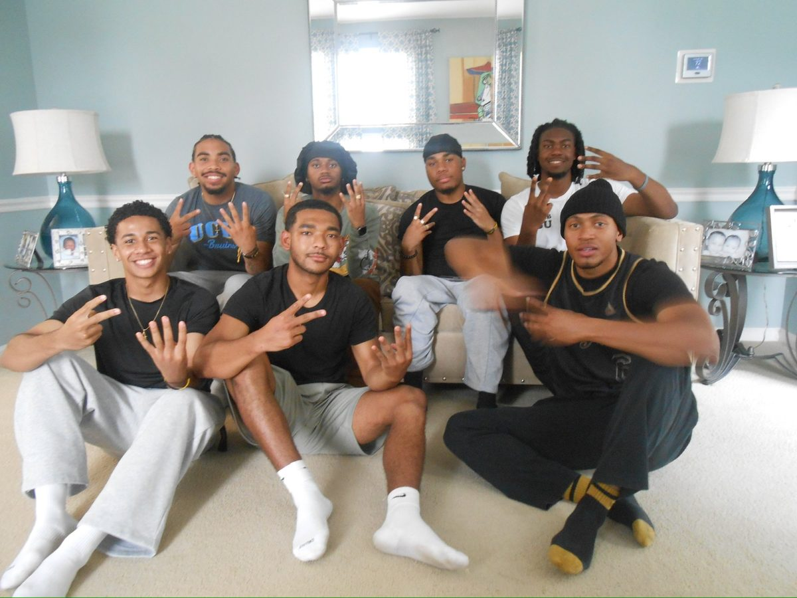
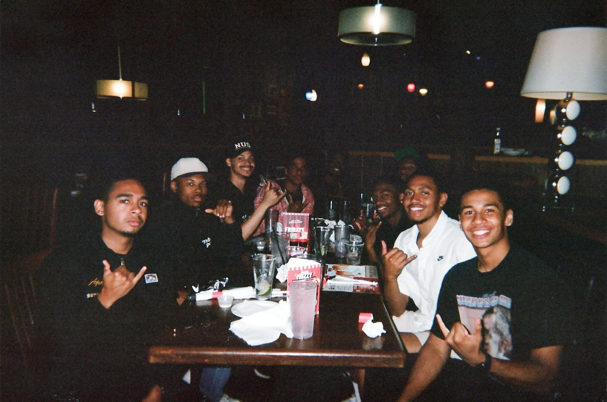
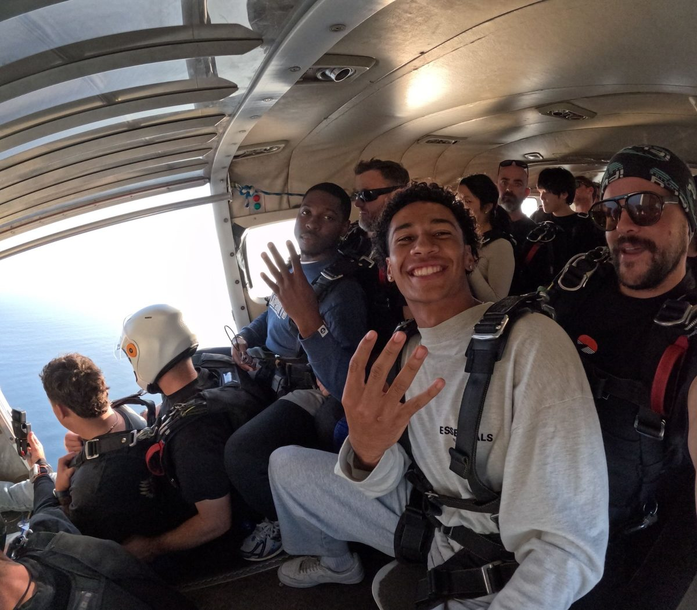

The problem isn't that brothers don't care. The problem is that we've built systems that don't require them to. We show up at meetings, grip, and go home. We attend regional conference and exchange Instagram handles. And somewhere along the way, we stopped asking if that was enough.
Real brotherhood is built through proximity and investment. The fraternity has to invest in brothers — not the other way around. That means retreats over conferences. Actual conversations over performative ones. A region that actively facilitates real connection between its chapters, not just coordination between its officers.
Grad chapter matriculation is one of the most quietly overlooked opportunities in Alpha West right now. Brothers cross, do exceptional work, graduate — and disappear. Not because they don't want to stay connected, but because we haven't made it easy or meaningful to do so. That's on us to fix.